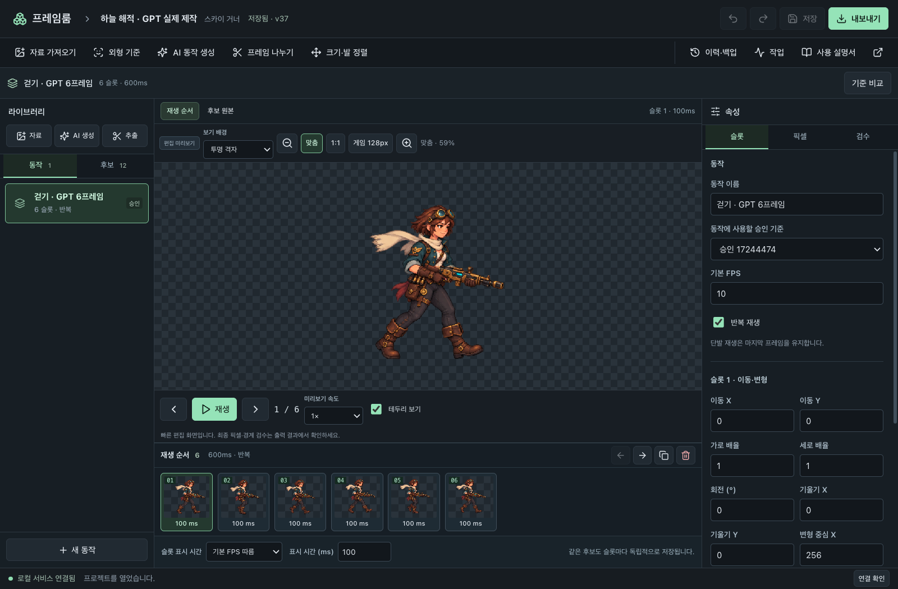

목차에서 바로 찾기
FRAME ROOM / 00
지금 가진 자료에서 시작하세요.
이미지가 준비됐는지에 따라 시작 경로를 고르면 됩니다.
PNG나 시트가 있어요 →
자료 가져오기 → 기준 확인 → 추출·정렬 → 편집·출력.
새 AI 생성 없이 시작 가능새로운 동작이 필요해요 →기준 이미지 승인 → AI 동작 생성 → 결과 확인 → 추출.
설정된 제공자 연결 필요이 설명서의 예제는 ‘하늘 해적’ 걷기 6프레임입니다.6장은 제작 예시에 지정한 수량입니다. 앱이 가장 좋은 6장을 추천한 것이 아닙니다. 예제의 후보 7~12는 제작 과정에서 수동 승인된 상태이며, 사용자 본인의 검수 기록을 뜻하지 않습니다.
FRAME ROOM · 실제 에디터 화면

1
라이브러리
동작과 추출된 후보를 고릅니다. 후보 확인 후 순서에 추가해야 타임라인에 들어갑니다.
1 라이브러리2 캔버스3 타임라인4 속성·수동 승인5 저장·내보내기6 제작 도구
1. 라이브러리 / 2. 캔버스 / 3. 타임라인 / 4. 속성·수동 승인 / 5. 저장·내보내기 / 6. 제작 도구
FRAME ROOM / 01
프로젝트와 원본을 준비하세요.
PNG 한 장 또는 프레임이 모인 시트에서 시작합니다.
FRAME ROOM · 실제 에디터 화면

- 프로젝트 목록에서 ‘새 프로젝트’를 열고 이름·캐릭터 이름·기본 셀 크기를 정합니다. 처음에는 기본 512×512를 사용할 수 있습니다.
- 상단 ‘자료 가져오기’에서 PNG/WebP 파일을 고르고 역할·형태를 지정한 뒤 선택한 파일 가져오기를 실행합니다. 외형 기준과 움직임 시트를 함께 보관할 수 있습니다.
- 자료의 실제 알파 표시를 확인합니다. ‘불투명’이면 투명 배경이 필요한지 판단하고 ‘프레임 나누기’의 배경 정리에서 처리합니다.
FRAME ROOM / 02
외형 기준을 정하고, 포즈를 준비하세요.
무엇이 고정되고 무엇이 움직여도 되는지 먼저 정합니다.
FRAME ROOM · 실제 에디터 화면

- ‘외형 기준’에서 기준 이미지를 지정하고 얼굴·의상·장비 등 고정 특징을 적습니다. 기준 초안을 만든 뒤 승인 탭에서 확인·승인합니다.
- 새 그림이 필요하면 ‘AI 동작 생성’을 엽니다. 승인 기준을 보면서 동작 설명, 요청 프레임 수, 제공자·모델을 확인합니다.
- ‘설정을 초안에 적용’ 후 저장하고 ‘새 후보 생성’을 누릅니다. 이미 완성된 시트가 있다면 생성은 건너뛰고 다음 단계로 갑니다.
TRY A PROMPT
생성 요청 예시요청 문구, 여기서 시작하세요.
프롬프트와 앱의 ‘요청 프레임 수’를 맞추세요. 지정한 수와 배치대로 생성됐는지는 결과에서 확인해야 합니다.
FRAME ROOM / 03
시트를 프레임 후보로 나누세요.
화면의 ‘후보’는 추출된 프레임 목록입니다. 자동 추천 순위가 아닙니다.
FRAME ROOM · 실제 에디터 화면

- ‘프레임 나누기’에서 처리할 원본을 선택합니다. 한 장은 전체 이미지, 규칙적인 시트는 격자 추출을 선택합니다.
- 열·행이나 영역을 맞추고 전신과 장비가 들어오는지 미리봅니다. 이웃 포즈가 섞이면 수동 영역으로 지정합니다.
- ‘프레임 후보 추출’을 실행한 뒤 편집기로 돌아와 라이브러리의 ‘후보’를 확인합니다. 반복 추출은 새 후보를 추가하므로 이전 결과와 구분해서 고릅니다.
FRAME ROOM / 04
공통 크기와 발 위치를 맞추세요.
자세마다 키를 늘리는 대신, 같은 배율과 기준점을 사용합니다.
FRAME ROOM · 실제 에디터 화면

- 후보를 선택하고 ‘크기·발 정렬’을 엽니다. 같은 동작의 후보가 같은 공통 배율 그룹에 속하는지 확인합니다.
- 원본에서 발 또는 루트 기준점을 클릭하고 좌표를 확인합니다. 자동 발 후보는 제안이므로 직접 확인합니다.
- 공통 배율·셀·여백과 목표 앵커를 맞춘 뒤 후보별 ‘이 후보 앵커 승인’을 누릅니다. 편집 초안을 저장합니다.
FRAME ROOM / 05
순서를 만들고, 시간을 조절하세요.
후보는 재료, 슬롯은 타임라인에 배치한 사용 위치입니다.
FRAME ROOM · 실제 에디터 화면

- 왼쪽 동작 탭에서 ‘새 동작’을 만듭니다. 후보 탭에서 사용할 포즈를 하나씩 골라 ‘선택 후보를 순서에 추가’를 누릅니다.
- 타임라인에서 슬롯을 선택하고 앞/뒤 이동 또는 복제를 사용합니다. 아래 ‘표시 시간 (ms)’을 입력한 뒤 Enter를 눌러 반영합니다.
- 재생으로 흐름을 확인합니다. 반복 여부와 실제 속도를 점검하고 ‘기준 비교’로 얼굴·의상·장비가 유지되는지 봅니다.
TIMING LAB
설명서 안에서만 변경같은 6장, 다른 리듬.
1 / 6 · 100ms
한 번 재생하는 길이 = 각 슬롯의 표시 시간 합계
실제 프로젝트에서 내보낸 6프레임을 사용합니다. 보간하거나 새 포즈를 생성하지 않습니다. 앱의 ‘미리보기 속도’와 달리 슬롯 시간을 바꾸면 출력 재생 길이도 달라집니다.
FRAME ROOM / 06
승인하고 저장한 뒤, 파일로 꺼내세요.
후보 승인, 앵커 승인, 동작 승인은 서로 다른 확인입니다.
FRAME ROOM · 실제 에디터 화면

- 오른쪽 ‘수동 승인’에서 후보를 기준과 비교해 승인합니다. 앵커 승인을 확인하고 관련 변경을 먼저 저장합니다.
- ‘동작 수동 승인·팀 테두리’에서 동작 체크리스트를 확인합니다. 필요하면 자동 검사 결과도 읽고 ‘동작 수동 승인 · 초안에 적용’ 후 다시 저장합니다.
- ‘내보내기’에서 출력할 동작을 선택해 ‘게임용 파일 출력’을 누릅니다. 완료된 결과를 재생한 뒤 bundle.zip을 다운로드합니다.
‘수동 승인됨’은 자동 검사 통과를 뜻하지 않습니다.자동 검사는 기술적인 경계·알파 등 문제를 찾는 별도 작업입니다. 캐릭터가 잘 그려졌는지, 움직임이 자연스러운지는 직접 확인하세요. 승인과 자동 검사 구분 보기 →
한 단계씩 확인하며 마무리하세요.
이 체크는 설명서 진행 표시입니다. 앱의 후보·동작을 승인하지 않으며, 새로고침하면 초기화됩니다.
0 / 6
상세 설명서로 더 알아보기 →이제 편집기에서 이어가세요.
이 설명서의 예제 조작은 실제 프로젝트를 바꾸지 않습니다.